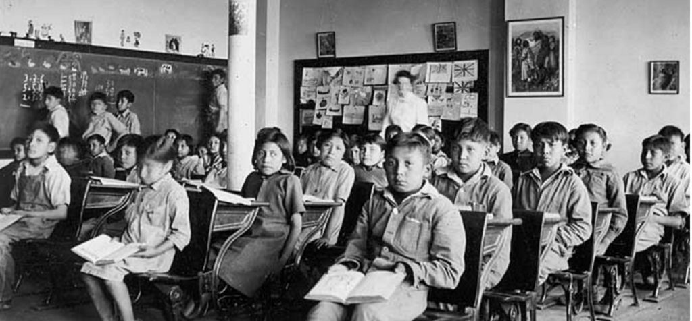

6.9 Cultura e ambientes de aprendizagem



6.9.1 A importância da cultura
No âmbito de cada ambiente de aprendizagem, existe uma cultura dominante que influencia todos os outros componentes. Na maior parte dos ambientes de aprendizagem, a cultura é frequentemente assumida como algo dado ou pode situar-se além da consciência dos aprendizes ou mesmo dos professores. Procurarei demonstrar por que razão os docentes, instrutores e professores devem dedicar especial atenção aos fatores culturais, de modo a que possam tomar decisões conscientes sobre a forma como os diferentes componentes de um ambiente de aprendizagem são implementados. Embora o conceito de cultura possa parecer um pouco abstrato nesta fase, demonstrarei quão crítico é para o planejamento de um ambiente de aprendizagem on-line eficaz.
6.9.2 Definindo a cultura
Defino a cultura como
os valores e as crenças dominantes que influenciam a tomada de decisões.
A escolha de conteúdos, as competências e atitudes promovidas, a relação entre professores e estudantes e muitos outros aspectos de um ambiente de aprendizagem serão todos profundamente influenciados pela cultura dominante de uma instituição ou turma (utilizada no sentido de qualquer agrupamento de estudantes e um professor). Assim, em um ambiente de aprendizagem, cada um dos componentes que descrevi será influenciado pela cultura dominante.
Por exemplo, os pais tendem a matricular os seus filhos em escolas que refletem os seus próprios valores e crenças, pelo que as características dos aprendizes nessa escola serão também frequentemente influenciadas pela cultura não apenas dos seus pais, mas também da sua escola. Esta constitui uma das muitas formas através das quais a cultura pode ser autorreforçada.
6.9.3 Identificando culturas
Notei pela primeira vez o impacto de diferentes culturas há muitos anos, quando realizava investigações no Reino Unido sobre a administração de grandes escolas secundárias unificadas (comprehensive high schools). Dado que estas escolas tinham sido criadas deliberadamente por um governo de centro-esquerda na Grã-Bretanha na década de 1960 para proporcionar igualdade de acesso ao ensino secundário para todos, e que tinham muitos elementos em comum (a sua grande dimensão — frequentemente com 1.500 estudantes ou mais, os seus currículos, a ideia de que cada estudante deveria dispor das mesmas oportunidades educativas), seria de prever que todas apresentassem uma cultura dominante semelhante. Contudo, visitei mais de 50 dessas escolas para recolher informações sobre a forma como eram geridas e sobre as principais dificuldades com que se deparavam, e cada uma delas revelou-se diferente.
Algumas foram criadas a partir de antigas escolas de gramática (grammar schools) altamente seletivas e funcionavam com base em um sistema rigoroso de distribuição dos estudantes por meio de testes, de modo a que, em cada ano, os estudantes bem-sucedidos subissem um nível e os alunos "mais fracos" descessem um nível, a fim de identificar os candidatos com melhor potencial para a universidade. Aqui, o valor dominante era a excelência acadêmica.
Algumas escolas eram destinadas a um único sexo (continuo intrigado com a forma como uma escola segregada por sexo poderia ser considerada "unificada"). Um dos principais objetivos de uma escola feminina que visitei consistia em ensinar às jovens a postura elegante ("poise"). Aqui, o valor dominante incidia no desenvolvimento de "qualidades de uma dama".
Outras eram escolas da periferia urbana, onde o foco incidia frequentemente em obter o melhor de cada criança, independentemente das suas capacidades. Nessas escolas, cada turma incluía crianças com a maior diversidade de capacidades possível, mas eram frequentemente locais barulhentos e agitados em comparação com as instituições de orientação mais elitista. Aqui, a ênfase incidia na inclusão e na igualdade de oportunidades.
As diferentes culturas de cada uma destas escolas eram tão marcantes que por vezes conseguia detectá-las apenas ao entrar pela porta, pela forma como os estudantes interagiam com os funcionários e entre si nos corredores, ou mesmo pela forma como os estudantes caminhavam (ou corriam).
6.9.4 Cultura e ambientes de aprendizagem
O fato de considerar a cultura uma influência boa ou má em um ambiente de aprendizagem dependerá de você partilhar ou rejeitar os valores e crenças subjacentes à cultura dominante.
As escolas residenciais no Canadá, nas quais as crianças indígenas eram frequentemente colocadas à força, constituem um exemplo claro de como a cultura impulsiona o funcionamento das escolas. O principal objetivo destas escolas residenciais consistia deliberadamente em destruir as culturas indígenas e substituí-las por uma cultura ocidental de influência religiosa. Nessas escolas, as crianças eram castigadas por serem o que eram. Nessas instituições, todos os restantes componentes do seu ambiente de aprendizagem eram utilizados para reforçar a cultura dominante que estava sendo imposta.
Embora os resultados para a maioria das crianças que frequentaram estas escolas tenham sido desastrosos, os responsáveis (o Estado e a Igreja trabalhando em conjunto) acreditavam verdadeiramente que estavam fazendo a coisa certa. No Canadá, continuamos a lutar para "fazer a coisa certa" no que se refere à educação indígena, mas qualquer solução bem-sucedida deve ter em conta as culturas indígenas, bem como a cultura ocidental dominante circundante.
A cultura é talvez mais nebulosa nas instituições de ensino superior, mas continua a ser uma influência poderosa, diferindo não apenas entre instituições, mas frequentemente entre departamentos acadêmicos da mesma instituição.
6.9.5 A cultura e os novos ambientes de aprendizagem
Como as culturas dominantes são frequentemente tão fortes, tornam-se muito difíceis de mudar. É particularmente difícil para um único indivíduo alterar uma cultura dominante. Mesmo os líderes carismáticos terão dificuldades, como muitos reitores de universidades constataram.
No entanto, como as novas tecnologias nos permitem desenvolver novos ambientes de aprendizagem, os professores dispõem hoje de uma oportunidade rara de criar conscientemente uma cultura que possa apoiar os valores e as crenças que consideram importantes para os estudantes de hoje.
Por exemplo, em um ambiente de aprendizagem on-line, procuro conscientemente criar uma cultura que reflita o seguinte:
- respeito mútuo (entre o professor e os estudantes e, em particular, entre os estudantes);
- abertura a visões e opiniões divergentes; respeito pela diversidade;
- argumentação e raciocínio baseados em evidências;
- tornar a aprendizagem envolvente e divertida;
- tornar explícitos e incentivar os valores e a epistemologia subjacentes a uma disciplina específica;
- transparência na avaliação (por exemplo, rubricas e critérios);
- reconhecimento e respeito pela personalidade de cada estudante na turma;
- colaboração e apoio mútuo.
Os elementos culturais acima descritos refletem, naturalmente, as minhas crenças e valores; os seus podem perfeitamente ser diferentes. No entanto, é importante que tenha consciência das suas crenças e valores, de modo a poder projetar o ambiente de aprendizagem de forma a apoiá-los da melhor maneira.
Poderá também considerar que estes elementos culturais se assemelham mais a resultados de aprendizagem, mas discordo. Estes elementos culturais são mais amplos e gerais, e refletem aquilo que considero serem condições verdadeiramente necessárias para a construção de um ambiente de aprendizagem eficaz na era digital.
Por fim, poderá questionar o direito de um professor impor as suas condições culturais pessoais a um ambiente de aprendizagem. Quanto a mim, não tenho problemas com isso. Como especialista na matéria ou profissional do ensino, encontra-se habitualmente em melhor posição do que os aprendizes para conhecer os requisitos de aprendizagem e os elementos culturais que melhor permitirão alcançá-los. Em todo o caso, se considera que os aprendizes deveriam ter uma palavra a dizer na determinação da cultura em que aprendem, essa é também uma escolha sua e poderia ser acolhida no âmbito da cultura.
6.9.6 Resumo
A cultura constitui um componente crítico de qualquer ambiente de aprendizagem. É importante ter consciência da influência da cultura em qualquer contexto de aprendizagem específico e procurar moldar essa cultura tanto quanto possível no sentido de apoiar o tipo de ambiente de aprendizagem que considera ser mais eficaz. No entanto, alterar uma cultura dominante pré-existente revela-se muito difícil. No entanto, as novas tecnologias permitem o desenvolvimento de novos ambientes de aprendizagem e oferecem, assim, a oportunidade de desenvolver o tipo de cultura que melhor servirá os seus aprendizes no âmbito desse ambiente de aprendizagem.
No entanto, em todos os ambientes de aprendizagem existirão elementos culturais que prevalecem em todos os componentes, razão pela qual acrescentei a cultura como plano de fundo de todos os componentes de um ambiente de aprendizagem no gráfico abaixo.
Figura 6.9.2: Todos os componentes de um ambiente de aprendizagem eficaz
6.9.7 A seguir
A Seção 6.10 apresenta uma breve conclusão a este capítulo sobre a construção de ambientes de aprendizagem eficazes.
Atividade 6.9 Considerando a cultura em um ambiente de aprendizagem
- Você concorda com a minha definição de "cultura" tal como utilizada na descrição de um ambiente de aprendizagem eficaz? Se não, como a definiria? Utilizaria outro termo para o que estou discutindo?
- Você consegue descrever a cultura da instituição em que trabalha? Quais são as suas principais características ou objetivos? Ou existem várias culturas?
- Você consegue descrever a cultura da sua própria turma ou turmas? O que você "herda" e o que consegue criar ou alterar?
- Você partilha da minha visão sobre a importância de compreender a cultura num ambiente de aprendizagem? Ou a cultura é algo que um professor deve ou pode ignorar?
- Qual seria a cultura ideal para as suas turmas/ensino? Como poderia fomentar ou criar tal cultura?
Estas perguntas destinam-se à sua reflexão. Não é disponibilizado feedback para esta atividade.